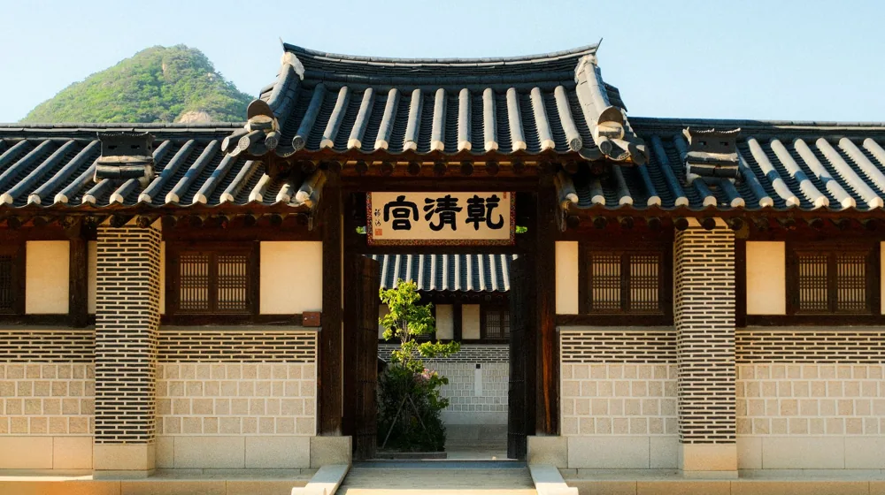

전국 종가 시그니처 메뉴 완벽 비교: 전통의 맛, 어디가 다를까?
사진: Ruby Huang / Pexels (무료 이미지, 출처 표기)
종가 시그니처 메뉴, 왜 특별할까요?

전통 한식의 정수를 맛보고 싶지만, 어디서부터 시작해야 할지 막막하셨나요? 수백 년 역사를 지닌 종가(宗家, 한 가문의 대를 잇는 큰집)에서는 단순한 음식을 넘어, 집안의 역사와 철학이 담긴 시그니처 메뉴를 선보입니다. 종가 음식은 조상을 기리고 손님을 대접하는 과정에서 자연스럽게 발달한 것으로, 제철 재료와 선조들의 지혜가 담긴 조리법이 고스란히 전해져 내려옵니다.
이는 단순한 레시피가 아닌 하나의 문화유산으로, 한국학중앙연구원 등 여러 기관에서 그 가치를 연구하고 보존하기 위해 노력하고 있습니다. 각 지역의 특산물과 기후, 생활 방식이 반영되어 같은 한식이라도 지역별로 확연히 다른 맛과 멋을 느낄 수 있다는 점이 바로 종가 시그니처 메뉴의 특별함입니다.
영남권 종가 시그니처 메뉴 엿보기: 대를 이은 깊은 맛
영남 지역, 특히 안동과 경주 등 유교 문화가 깊이 뿌리내린 곳에서는 간결하면서도 깊은 맛의 종가 음식이 발달했습니다. 제사 문화와 연관된 음식이 많으며, 절제된 양념으로 재료 본연의 맛을 살리는 것이 특징입니다.
- 안동 헛제삿밥: 제사 후에 조상님께 올렸던 음식들을 비벼 먹던 밥에서 유래했습니다. 고사리, 도라지, 무나물 등 삼색나물과 상어포(돔배기), 산적 등의 제사 음식을 고명으로 얹고 간장 양념에 비벼 먹습니다.
- 종가 약고추장: 고추장에 쇠고기를 다져 넣어 만들며, 짭짤하면서도 감칠맛이 돌아 헛제삿밥과 곁들이거나 비빔밥 양념으로 즐겨 먹습니다. 오랜 시간 끓여 깊은 맛을 냅니다.
- 경주 최부잣집 육회: 신선한 한우를 배, 마늘, 참기름 등 최소한의 양념으로 버무려 재료 본연의 맛을 살리는 것이 특징입니다. 깔끔하면서도 고소한 맛이 일품입니다.
이 지역 종가 음식은 화려함보다는 재료의 질과 조리 과정의 정성에 중점을 둔 '절제의 미학'을 보여줍니다.
호남권 종가 시그니처 메뉴 엿보기: 오감 만족, 풍요의 미학
예로부터 곡창지대로 풍요로웠던 호남 지역은 다채롭고 넉넉한 상차림이 특징입니다. 전주, 담양, 해남 등지에서는 제철 해산물과 산나물, 발효식품을 활용한 깊은 맛의 종가 음식을 만날 수 있습니다.
- 전주 최명희 종가 한정식: 전주의 비빔밥, 떡갈비 등 다양한 향토 음식을 기반으로 한 정갈하고 풍성한 한정식이 유명합니다. 김치, 장아찌 등 발효 음식의 종류도 풍부합니다.
- 담양 창평 국밥: 창평 고씨 종가에서 전해 내려오는 방식으로 만드는 국밥은 돼지 내장과 고기가 푸짐하게 들어가 있으며, 깊고 진한 육수가 특징입니다.
- 해남 윤선도 종가 보리굴비: 해풍에 말려 꼬들꼬들한 식감을 자랑하는 보리굴비는 쌀뜨물에 담가 비린 맛을 제거한 후 쪄내거나 구워 먹습니다. 녹차물에 밥을 말아 굴비와 함께 먹으면 별미입니다.
호남 종가 음식은 재료의 신선함과 풍부한 양념, 그리고 오랜 시간 숙성된 발효의 맛이 어우러져 오감을 만족시키는 미식 경험을 제공합니다.
다른 지역 종가 메뉴와 방문 팁: 숨겨진 보물을 찾아서
영남과 호남 외에도 강원, 경기, 충청 등 각 지역 특색을 살린 다양한 종가 시그니처 메뉴가 존재합니다. 예를 들어, 충청도 지역 종가에서는 구기자를 활용한 요리나 연잎밥, 버섯 요리 등을 선보이는 경우가 많습니다. 강원도에서는 감자, 메밀 같은 토속 재료를 활용한 메뉴를 찾아볼 수 있습니다.
종가 음식을 맛보기 전에는 방문하려는 종가의 운영 방식과 메뉴를 반드시 확인해야 합니다. 대부분의 종가 체험은 사전 예약제로 운영되며, 2026년 8월 기준으로 일부 종가에서는 특정 요일이나 기간에만 특별 메뉴를 제공하기도 합니다. 방문 전에는 최소 1주일 전 전화 또는 온라인으로 예약을 확정하는 것이 좋습니다.
종가 메뉴를 제대로 즐기기 위한 체크리스트
종가 시그니처 메뉴는 단순히 끼니를 해결하는 것을 넘어, 선조들의 지혜와 문화를 경험하는 일입니다. 다음 체크리스트를 활용하여 더욱 풍성한 미식 여행을 계획해 보세요.
종가 시그니처 메뉴를 통해 한국 전통의 맛과 멋을 경험하는 것은 단순한 식사를 넘어 깊이 있는 문화 체험이 될 수 있습니다. 방문 전 공식 홈페이지나 해당 기관에서 정확한 사항을 다시 확인하시길 권장합니다.
🔗 이 글도 함께 보면 좋아요: 종가음식과 한정식, '이것' 때문에 격이 다르다? 진짜 차이점 완벽 비교
관련 추천 상품
이 포스팅은 쿠팡 파트너스 활동의 일환으로, 이에 따른 일정액의 수수료를 제공받습니다.